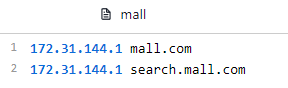
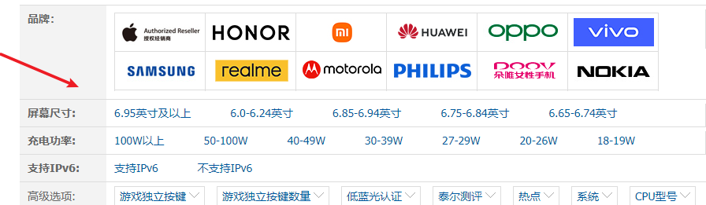

用ElasticSearch實現商品搜索
SpringBoot微服務項目筆記-13
搜索頁面
-
搜尋頁面有自己的子網域，網址是 http://search.mall.com/
-
我觀察了一下，台灣的商城網站大多是用子目錄，例如:
https://www.momoshop.com.tw/search/
https://www.etmall.com.tw/Search?
https://shopping.friday.tw/ec2/search?
-
而用子網域的通常是大陸的電商網站，經過查詢兩者其實沒太大差異
-
通常來說，屬於網站下的附屬小功能，用子目錄；而體量大到可以分割出去才用會用子網域
-
子網域複雜了一點，反正都學學吧
設定網段
- 改host模擬DNS

- nginx
- 採了坑，改完忘記要重開服務

- 網關
- id: mall_search_route
uri: lb://search
predicates:
- Host=search.mall.com
靜態資源
- 這邊一樣用thymeleaf渲染，引包
- 關閉 spring.thymeleaf.cache=false
- 調整
list.html，確認一下跟首頁的超連結是否正確
寫Vo
這可就複雜了，需要考慮各種搜尋條件、返回的結果…
- 搜尋條件 SearchParam.java
@Data
public class SearchParam {
/**
* 頁面傳遞過來的全文匹配關鍵字
*/
private String keyword;
/**
* 品牌id,可以多選
*/
private List<Long> brandId;
/**
* 三級分類id
*/
private Long catalog3Id;
/**
* 排序條件：sort=price/salecount/hotscore_desc/asc
*/
private String sort;
/**
* 是否有貨
*/
private Integer hasStock;
/**
* 價格區間查詢
*/
private String skuPrice;
/**
* 按照屬性進行篩選
*/
private List<String> attrs;
/**
* 頁碼
*/
private Integer pageNum = 1;
/**
* 原生的所有查詢條件
*/
private String _queryString;
}
- 返回的結果 SearchResult.java
@Data
public class SearchResult {
/**
* 查詢到的所有商品信息
*/
private List<SkuEsModel> product;
/**
* 當前頁碼
*/
private Integer pageNum;
/**
* 總記錄數
*/
private Long total;
/**
* 總頁碼
*/
private Integer totalPages;
private List<Integer> pageNavs;
/**
* 當前查詢到的結果，所有涉及到的品牌
*/
private List<BrandVo> brands;
/**
* 當前查詢到的結果，所有涉及到的所有屬性
*/
private List<AttrVo> attrs;
/**
* 當前查詢到的結果，所有涉及到的所有分類
*/
private List<CatalogVo> catalogs;
//===========================以上是返回給頁面的所有信息============================//
/* 麵包屑導航數據 */
private List<NavVo> navs;
@Data
public static class NavVo {
private String navName;
private String navValue;
private String link;
}
@Data
public static class BrandVo {
private Long brandId;
private String brandName;
private String brandImg;
}
@Data
public static class AttrVo {
private Long attrId;
private String attrName;
private List<String> attrValue;
}
@Data
public static class CatalogVo {
private Long catalogId;
private String catalogName;
}
}
- 返回的結果中的屬性 AttrResponseVo.java
- 就是這些啦，根據結果從ES抽出的屬性

@Data
public class AttrResponseVo {
/**
* 屬性id
*/
private Long attrId;
/**
* 屬性名
*/
private String attrName;
/**
* 是否需要檢索[0-不需要，1-需要]
*/
private Integer searchType;
/**
* 屬性圖標
*/
private String icon;
/**
* 可選值列表[用逗號分隔]
*/
private String valueSelect;
/**
* 屬性類型[0-銷售屬性，1-基本屬性，2-既是銷售屬性又是基本屬性]
*/
private Integer attrType;
/**
* 啟用狀態[0 - 禁用，1 - 啟用]
*/
private Long enable;
/**
* 所屬分類
*/
private Long catalogId;
/**
* 快速展示【是否展示在介紹上；0-否 1-是】，在sku中仍然可以調整
*/
private Integer showDesc;
private Long attrGroupId;
private String catalogName;
private String groupName;
private Long[] catalogPath;
}
查詢
這一節真的太偏了，前後端不分的thymeleaf本身已經很少人用，ES查詢語句的編寫真的枯燥又無聊，暫時先複製貼上跳過
- 簡單整理一下流程:
- 造Vo封裝搜索條件與呈現的結果
- 先在ES根據搜索條件寫出DSL
- 將DSL編譯成Java語法
- 處理聚合
- 將結果封裝，推回給前端
- SearchController.java
@GetMapping(value = "/list.html")
public String listPage(SearchParam param, Model model, HttpServletRequest request) {
// Spring自動將頁面提交過來的所有請求參數封裝成我們指定的SearchParam
param.set_queryString(request.getQueryString());
// 根據傳遞來的頁面的查詢參數，去es中檢索商品
SearchResult result = mallSearchService.search(param);
// 存到model
model.addAttribute("result", result);
return "list";
}
- MallSearchServiceImpl.java
/**
* 在es檢索
*
* @param param 檢索的所有參數
* @return 返回的結果
*/
public SearchResult search(SearchParam param) {
SearchResult result = null;
// 1、動態構建檢索需要的DSL語句
// 1、準備檢索請求
SearchRequest searchRequest = buildSearchRequest(param);
try {
// 2、執行檢索請求
SearchResponse searchResponse = client.search(searchRequest, ElasticConfig.COMMON_OPTIONS);
// 3、分析響應數據，封裝成需要的格式
result = buildSearchResponse(param, searchResponse);
} catch (IOException e) {
e.printStackTrace();
}
return result;
}
private SearchRequest buildSearchRequest(SearchParam param) {
// 構建DSL語句對象
SearchSourceBuilder sourceBuilder = new SearchSourceBuilder();
/**
* 模糊匹配，過濾（按照屬性，分類，品牌，價格區間，庫存）
*/
// 1、構建bool - query
BoolQueryBuilder boolQueryBuilder = QueryBuilders.boolQuery();
// 1.1、must【得分】
// 分詞匹配skuTitle
if (!StringUtils.isEmpty(param.getKeyword())) {
boolQueryBuilder.must(QueryBuilders.matchQuery("skuTitle", param.getKeyword()));
}
// 1.2、filter【無得分】
// 三級分類
if (param.getCatalog3Id() != null) {
boolQueryBuilder.filter(QueryBuilders.termQuery("catalogId", param.getCatalog3Id()));
}
// 1.3、品牌
if (!CollectionUtils.isEmpty(param.getBrandId())) {
boolQueryBuilder.filter(QueryBuilders.termsQuery("brandId", param.getBrandId()));
}
// 1.4、屬性
if (!CollectionUtils.isEmpty(param.getAttrs())) {
for (String attr : param.getAttrs()) {
BoolQueryBuilder boolQuery = QueryBuilders.boolQuery();
String[] s = attr.split("_");
String attrId = s[0];
String[] attrValues = s[1].split(":");
// must中的必須是同時滿足的，如果boolQuery不是內層的
// 那麼boolQuery會拼接多個must(attrs.attrId)，例如id = 6時，同時必須id = 7，沒有此attr
boolQuery.must(QueryBuilders.termQuery("attrs.attrId", attrId));
boolQuery.must(QueryBuilders.termsQuery("attrs.attrValue", attrValues));
// 每一個屬性都要生成一個嵌入式查詢
// 商品必須包含每一個 傳入的屬性
NestedQueryBuilder nestedQuery = QueryBuilders.nestedQuery("attrs", boolQuery, ScoreMode.None);
boolQueryBuilder.filter(nestedQuery);
}
}
// 1.5、庫存
if (param.getHasStock() != null) {
boolQueryBuilder.filter(QueryBuilders.termQuery("hasStock", param.getHasStock() == 1));
}
// 1.6、價格區間 0_500 _500 500_
if (!StringUtils.isEmpty(param.getSkuPrice())) {
RangeQueryBuilder rangeQuery = QueryBuilders.rangeQuery("skuPrice");
String[] s = param.getSkuPrice().split("_");
if (s.length == 2) {
rangeQuery.gte(s[0]).lte(s[1]);
} else if (s.length == 1) {
if (param.getSkuPrice().startsWith("_")) {
rangeQuery.lte(s[0]);
}
if (param.getSkuPrice().endsWith("_")) {
rangeQuery.gte(s[0]);
}
}
boolQueryBuilder.filter(rangeQuery);
}
// 1、END 封裝查詢條件
sourceBuilder.query(boolQueryBuilder);
/**
* 排序，分頁，高亮
*/
// 2.1、排序
if (!StringUtils.isEmpty(param.getSort())) {
String[] s = param.getSort().split("_");
SortOrder order = s[1].equalsIgnoreCase("asc") ? SortOrder.ASC : SortOrder.DESC;
sourceBuilder.sort(s[0], order);
}
// 2.2、分頁
sourceBuilder.from((param.getPageNum() - 1) * EsConstant.PRODUCT_PAGESIZE);
sourceBuilder.size(EsConstant.PRODUCT_PAGESIZE);
// 2.3、高亮
if (!StringUtils.isEmpty(param.getKeyword())) {
HighlightBuilder highlightBuilder = new HighlightBuilder();
highlightBuilder.field("skuTitle");
highlightBuilder.preTags("<b style='color:red'>");
highlightBuilder.postTags("</b>");
sourceBuilder.highlighter(highlightBuilder);
}
/**
* 聚合分析【品牌、分類、分析所有可選的規格】
*/
// 3.1、品牌聚合
TermsAggregationBuilder brand_agg = AggregationBuilders.terms("brand_agg").field("brandId").size(10);
// 子聚合，獲得品牌name和圖片
brand_agg.subAggregation(AggregationBuilders.terms("brand_name_agg").field("brandName").size(1));
brand_agg.subAggregation(AggregationBuilders.terms("brand_img_agg").field("brandImg").size(1));
// 構建DSL
// TODO 聚合品牌
sourceBuilder.aggregation(brand_agg);
// 3.2、分類聚合
TermsAggregationBuilder catalog_agg = AggregationBuilders.terms("catalog_agg").field("catalogId").size(20);
// 子聚合，獲得分類名
catalog_agg.subAggregation(AggregationBuilders.terms("catalog_name_agg").field("catalogName").size(1));
// 構建DSL
// TODO 聚合分類
sourceBuilder.aggregation(catalog_agg);
// 3.3、規格聚合【嵌入式】
NestedAggregationBuilder attr_agg = AggregationBuilders.nested("attr_agg", "attrs");
// 根據id分組
TermsAggregationBuilder attr_id_agg = AggregationBuilders.terms("attr_id_agg").field("attrs.attrId").size(10);
// 子聚合=》在id分組內部，繼續按照 attr_name分組
attr_id_agg.subAggregation(AggregationBuilders.terms("attr_name_agg").field("attrs.attrName").size(1));
// 子聚合=》在id分組內部，繼續按照 attr_value分組
attr_id_agg.subAggregation(AggregationBuilders.terms("attr_value_agg").field("attrs.attrValue").size(50));
// 嵌入式聚合
attr_agg.subAggregation(attr_id_agg);
// 構建DSL
// TODO 聚合屬性規格
sourceBuilder.aggregation(attr_agg);
SearchRequest searchRequest = new SearchRequest(new String[]{EsConstant.PRODUCT_INDEX}, sourceBuilder);
// 打印DSL
System.out.println(sourceBuilder.toString());
return searchRequest;
}
/**
* 封裝檢索結果
* 1、返回所有查詢到的商品
* 2、當前所有商品涉及到的所有屬性信息
* 3、當前所有商品涉及到的所有品牌信息
* 4、當前所有商品涉及到的所有分類信息
* 5、分頁信息 pageNum:當前頁碼 total:總記錄數 totalPages: 總頁碼
*/
private SearchResult buildSearchResponse(SearchParam param, SearchResponse searchResponse) {
SearchResult result = new SearchResult();
SearchHits hits = searchResponse.getHits();
// 1、返回所有查詢到的商品
List<SkuEsModel> products = new ArrayList<>();
if (!ArrayUtils.isEmpty(hits.getHits())) {
for (SearchHit hit : hits.getHits()) {
String jsonStr = hit.getSourceAsString();
SkuEsModel model = JSON.parseObject(jsonStr, SkuEsModel.class);
// 設置高亮信息
if (!StringUtils.isEmpty(param.getKeyword())) {
HighlightField skuTitle = hit.getHighlightFields().get("skuTitle");
model.setSkuTitle(skuTitle.getFragments()[0].string());
}
products.add(model);
}
}
result.setProducts(products);
// 2、當前所有商品涉及到的所有屬性信息
List<SearchResult.AttrVo> attrVos = new ArrayList<>();
ParsedNested attr_agg = searchResponse.getAggregations().get("attr_agg");
ParsedLongTerms attr_id_agg = attr_agg.getAggregations().get("attr_id_agg");
List<? extends Terms.Bucket> attrBuckets = attr_id_agg.getBuckets();
for (Terms.Bucket bucket : attrBuckets) {
SearchResult.AttrVo attrVo = new SearchResult.AttrVo();
// 提取屬性ID
attrVo.setAttrId(bucket.getKeyAsNumber().longValue());
// 提取屬性名字
ParsedStringTerms attr_name_agg = bucket.getAggregations().get("attr_name_agg");
attrVo.setAttrName(attr_name_agg.getBuckets().get(0).getKeyAsString());
// 提取品牌圖片
ParsedStringTerms attr_value_agg = bucket.getAggregations().get("attr_value_agg");
List<String> attrValues = attr_value_agg.getBuckets().stream().map(item -> {
return ((Terms.Bucket) item).getKeyAsString();
}).collect(Collectors.toList());
attrVo.setAttrValue(attrValues);
attrVos.add(attrVo);
}
result.setAttrs(attrVos);
// 3、當前所有商品涉及到的所有品牌信息
List<SearchResult.BrandVo> brandVos = new ArrayList<>();
ParsedLongTerms brand_agg = searchResponse.getAggregations().get("brand_agg");
List<? extends Terms.Bucket> brandBuckets = brand_agg.getBuckets();
for (Terms.Bucket bucket : brandBuckets) {
SearchResult.BrandVo brandVo = new SearchResult.BrandVo();
// 提取品牌ID
brandVo.setBrandId(bucket.getKeyAsNumber().longValue());
// 提取品牌名字
ParsedStringTerms brand_name_agg = bucket.getAggregations().get("brand_name_agg");
brandVo.setBrandName(brand_name_agg.getBuckets().get(0).getKeyAsString());
// 提取品牌圖片
ParsedStringTerms brand_img_agg = bucket.getAggregations().get("brand_img_agg");
brandVo.setBrandImg(brand_img_agg.getBuckets().get(0).getKeyAsString());
brandVos.add(brandVo);
}
result.setBrands(brandVos);
// 4、當前所有商品涉及到的所有分類信息
List<SearchResult.CatalogVo> catalogVos = new ArrayList<>();
ParsedLongTerms catalog_agg = searchResponse.getAggregations().get("catalog_agg");
List<? extends Terms.Bucket> catalogBuckets = catalog_agg.getBuckets();
for (Terms.Bucket bucket : catalogBuckets) {
SearchResult.CatalogVo catalogVo = new SearchResult.CatalogVo();
// 提取分類Id
catalogVo.setCatalogId(Long.parseLong(bucket.getKeyAsString()));
// 提取分類名字
ParsedStringTerms catalog_name_agg = bucket.getAggregations().get("catalog_name_agg");
catalogVo.setCatalogName(catalog_name_agg.getBuckets().get(0).getKeyAsString());
catalogVos.add(catalogVo);
}
result.setCatalogs(catalogVos);
// 5、分頁信息 pageNum:當前頁碼 、total:總記錄數 、totalPages: 總頁碼
long total = hits.getTotalHits().value;
int totalPages = (int) total % EsConstant.PRODUCT_PAGESIZE == 0 ? (int) total / EsConstant.PRODUCT_PAGESIZE :
((int) total / EsConstant.PRODUCT_PAGESIZE + 1);
result.setPageNum(param.getPageNum());
result.setTotal(total);
result.setTotalPages(totalPages);
// 6、所有頁碼數
List<Integer> pageNavs = new ArrayList<>();
for (int i = 1; i <= totalPages; i++) {
pageNavs.add(i);
}
result.setPageNavs(pageNavs);
// 7、構建麵包屑導航功能
if (param.getAttrs() != null && param.getAttrs().size() > 0) {
List<SearchResult.NavVo> collect = param.getAttrs().stream().map(attr -> {
//1、分析每一個attrs傳過來的參數值
SearchResult.NavVo navVo = new SearchResult.NavVo();
// attrs=2_5寸:6寸
String[] s = attr.split("_");
navVo.setNavValue(s[1]);
R r = productFeignService.attrInfo(Long.parseLong(s[0]));
// 根據請求構造麵包屑 規格屬性Id集合，這個集合包含的屬性規格不显示【前端會遍歷每個參數显示】
result.getAttrIds().add(Long.parseLong(s[0]));
if (r.getCode() == 0) {
AttrResponseVo data = r.getData("attr", new TypeReference<AttrResponseVo>() {
});
// 設置屬性名
navVo.setNavName(data.getAttrName());
} else {
navVo.setNavName(s[0]);
}
//2、取消了這個麵包屑以後，我們要跳轉到哪個地方，將請求的地址url裏面的當前置空
//拿到所有的查詢條件，去掉當前
String replace = replaceQueryString(param, attr, "attrs");
navVo.setLink("http://search.mall.com/list.html?" + replace);
return navVo;
}).collect(Collectors.toList());
result.setNavs(collect);
}
// 品牌、分類
if (param.getBrandId() != null && param.getBrandId().size() > 0) {
List<SearchResult.NavVo> navs = result.getNavs();
SearchResult.NavVo navVo = new SearchResult.NavVo();
navVo.setNavName("品牌");
// TODO 遠程查詢所有品牌
R r = productFeignService.brandsInfo(param.getBrandId());
if (r.getCode() == 0) {
List<BrandVo> brand = r.getData("brand", new TypeReference<List<BrandVo>>() {
});
StringBuffer sb = new StringBuffer();
String replace = "";
for (BrandVo brandVo : brand) {
sb.append(brandVo.getName() + ";");
replace = replaceQueryString(param, brandVo.getBrandId() + "", "brandId");
}
navVo.setNavValue(sb.toString());
navVo.setLink("http://search.mall.com/list.html?" + replace);
}
navs.add(navVo);
}
// TODO 分類 麵包屑
return result;
}
private String replaceQueryString(SearchParam param, String value, String key) {
String encode = null;
try {
encode = URLEncoder.encode(value, "UTF-8");
encode = encode.replace("+", "%20"); //瀏覽器對空格的編碼和Java不一樣，差異化處理
} catch (UnsupportedEncodingException e) {
e.printStackTrace();
}
// 就是點了X之後，應該跳轉的地址
// 這裏要判斷一下，attrs是不是第一個參數，因為第一個參數 沒有&符號
// TODO BUG，第一個參數不帶&
return param.get_queryString().replace("&" + key + "=" + encode, "");
}
麵包屑導航
- 學到新名詞 Breadcrumb，就是像這種東西啦
- 確實就是源自於童話故事糖果屋，主角在前往森林的路上放置麵包屑找到回家的方向
- 但我記得不是被鳥吃掉了嗎?
聚合問題
- 報錯
fielddata is unsupported
Can't load fielddata on [XXX] because fielddata is unsupported on fields of type [keyword]. Use doc values instead.
- 因為當初mapping不想讓這些欄位被查到，做的設定

- doc_values 預設是true，當手動設為 false 時，無法基於該欄位排序、聚合、在腳本中訪問欄位值，所以報錯
- 解法: 重構建mapping，可以用
POST _reindex複製走舊的資料，重造mapping後再搬回去
上次修改於 2022-01-30